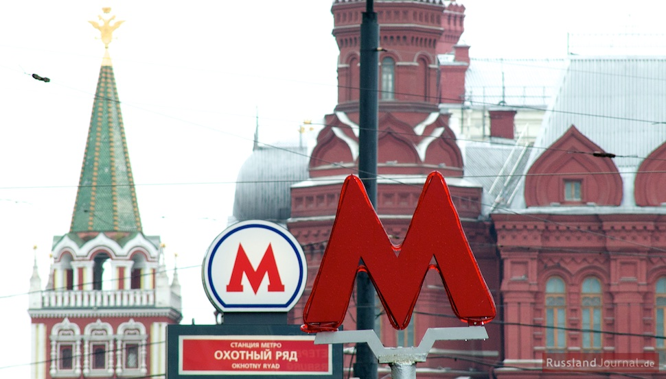

Facts About the Moscow Metro
- The Moscow Metro was first opened in 1935 under Stalin’s Soviet Union, with a single 11km line serving
13 stations. In the eight decades that have followed, the metro system has been expanded
to encompass more than 200 stations and 379km of track. During this time, the style of
Moscow’s metro stations has taken in baroque architecture and art deco influences and continues
to evolve today, with modern station developments adopting a more functional, internationalist approach.
- The Moscow Metro is the world record holder for on-time departures and arrivals.
The interval between trains during rush hour is only 40 seconds.
- Moscow subway is famous for its underground architecture: 44 of more than 200 stations
are listed as cultural heritage sites.
- The deepest station of the Moscow metro is "Park Pobedy", 84 meters, the height of 28 storey building.
It's one of the deepest stations in the world.
